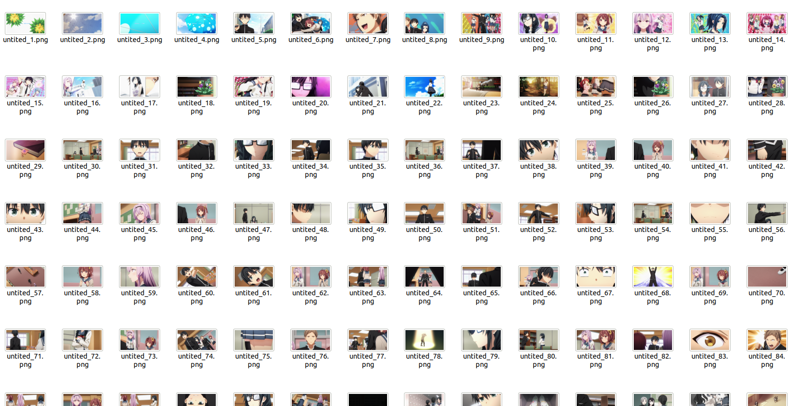
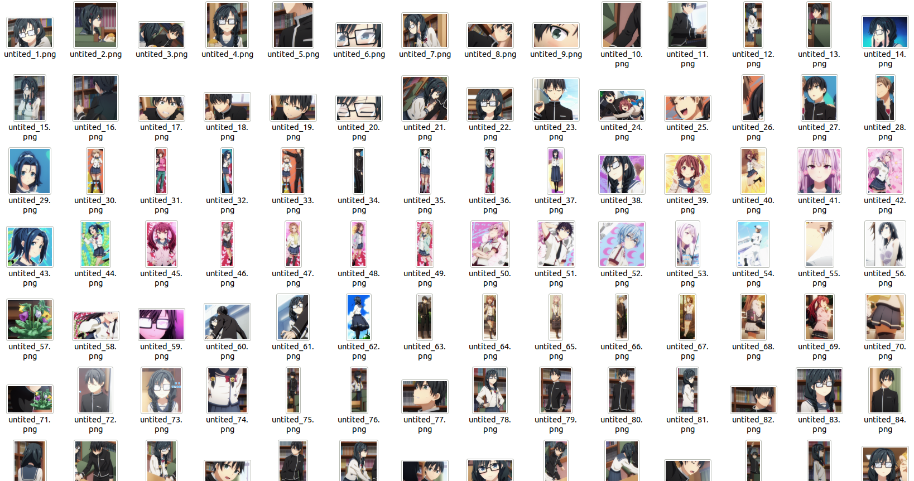
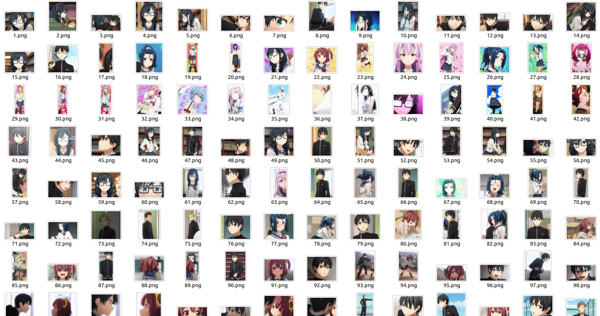

Extracting Character Images from Videos
(Chinese Doc：https://deepghs.github.io/waifuc/main/tutorials-CN/crawl_videos/index.html )
Install Additional Dependencies
waifuc also provides a method to extract images from videos. Before running, you need to install additional dependencies, including the pyav library, for video processing:
pip install git+https://github.com/deepghs/waifuc.git@main#egg=waifuc[video]
Extract Images from Video Files
In waifuc, you can use VideoSource to process video files, extract frames, and save them as images. Here is an example:
1from waifuc.export import SaveExporter
2from waifuc.source import VideoSource
3
4if __name__ == '__main__':
5 source = VideoSource(
6 '/data/videos/[IrizaRaws] Oresuki - 03 (BDRip 1920x1080 x264 10bit FLAC).mkv'
7 )
8 source.export(
9 SaveExporter('/data/dstdataset')
10 )
The saved images look like this:
Extract Images from a Folder Containing Videos
In many cases, you may want to process an entire series of downloaded anime videos stored in the same folder. You can directly extract frames from a folder containing videos, as shown in the following code:
1from waifuc.export import SaveExporter
2from waifuc.source import VideoSource
3
4if __name__ == '__main__':
5 source = VideoSource.from_directory('/data/videos')
6 source.export(
7 SaveExporter('/data/dstdataset')
8 )
This code will iterate through all video files in the /data/videos path, extract frames, and save them to the /data/dstdataset folder.
Extract Character Images from a Folder Containing Videos
To extract character images from a video folder, you just need to add the PersonSplitAction to the code, as shown below:
1from waifuc.action import PersonSplitAction
2from waifuc.export import SaveExporter
3from waifuc.source import VideoSource
4
5if __name__ == '__main__':
6 source = VideoSource.from_directory('/data/videos')
7 source = source.attach(
8 PersonSplitAction(),
9 )
10 source.export(
11 SaveExporter('/data/dstdataset')
12 )
The code above extracts frames from videos and saves portraits obtained from those frames, as shown below:
However, it seems that some images are not suitable for training. Therefore, in actual anime videos, you can add more actions to obtain a higher quality training dataset. For example, the following code:
1from waifuc.action import PersonSplitAction, FilterSimilarAction, FileOrderAction, MinSizeFilterAction, FaceCountAction
2from waifuc.export import SaveExporter
3from waifuc.source import VideoSource
4
5if __name__ == '__main__':
6 source = VideoSource.from_directory('/data/videos')
7 source = source.attach(
8 # filter similar on full frames (e.g. OPs, EDs)
9 FilterSimilarAction(),
10
11 # split for each person
12 PersonSplitAction(),
13
14 # must contain only 1 face
15 FaceCountAction(1),
16
17 # filter images with min(width, height) < 320
18 MinSizeFilterAction(320),
19
20 # filter similar person images
21 FilterSimilarAction(),
22
23 # rename the files in order with png format
24 FileOrderAction(ext='.png'),
25 )
26 source.export(
27 SaveExporter('/data/dstdataset')
28 )
This will result in the following dataset:
